Atendimento ortopédico especializado para todas as fases da vida
Seja qual for a sua dor, no Instituto Integrado de Ortopedia e Traumatologia
você encontra um especialista para a sua necessidade, ou para a necessidade do seu filho.
Localizado no Complexo UMC, em Uberlândia, o IIOT reúne
nove médicos com atuação em diferentes áreas da
ortopedia e traumatologia, com praticidade, segurança e fácil acesso ao agendamento.
Encontre o especialista ideal para a sua necessidade
Escolha a região do corpo para conhecer os médicos com atuação nessa especialidade.
Ao escolher uma área, o corpo clínico abaixo mostra quem atende.
Corpo clínico
Conheça a equipe médica do instituto.
Dr. Alex Pereira
Cirurgia minimamente invasiva da coluna vertebral, deformidades e hérnia de disco
Formado pela UFU em 2008. Especialização em Cirurgia da Coluna pela Unicamp. Deformidades da Coluna pela AACD/SP e vários cursos internacionais.
CRM-MG 47.102 · RQE 46.388
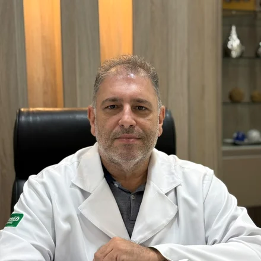
Dr. André Luiz
Trauma, cirurgia do tornozelo e pé
Formado pela UFU em 2000. Especialista em Ortopedia e Traumatologia pela UFU. Membro titular da SBOT.
CRM-MG 35.195 · RQE 11.323
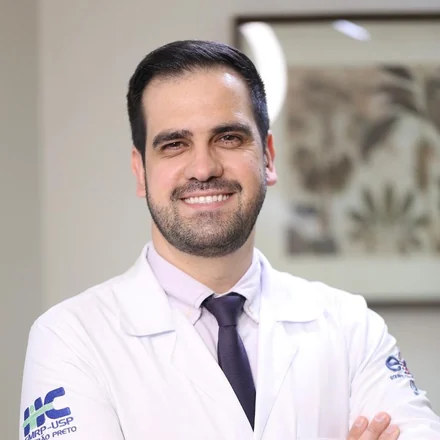
Dr. André Pereira
Cirurgia da coluna vertebral e cirurgia minimamente invasiva
Formado pela UFU. Especialista em Ortopedia e Traumatologia pela USP-RP, com subespecialização em cirurgia da coluna e cirurgia endoscópica da coluna. Membro da SBOT e da SBC.
CRM-MG 73.466 · RQE 57.712
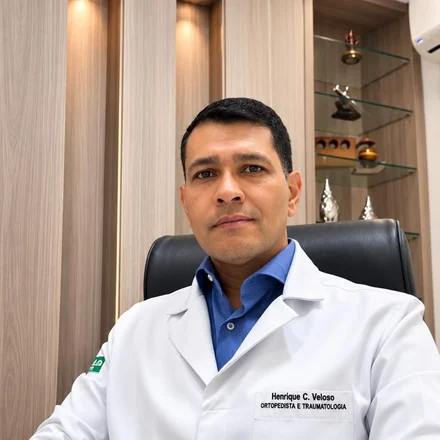
Dr. Henrique Campos
Ombro, cotovelo, mão, microcirurgia e artroscopia
Formado pela UFGD. Especialização em Ortopedia e Traumatologia pela UFU, com subespecialização em cirurgia do membro superior e microcirurgia pela UFU.
CRM-MG 46.931 · RQE 34.811
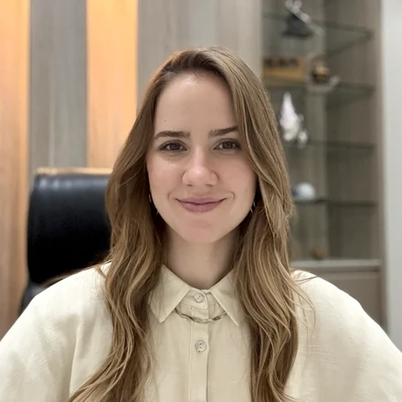
Dra. Janaina Hess
Ortopedia e traumatologia pediátrica
Formada pela UFCSPA. Especialista em Ortopedia e Traumatologia pela UFG, com subespecialização em Ortopedia Pediátrica pela UFU. Membro titular da SBOT e da SBOP.
CRM-MG 98.857 · RQE 62.759
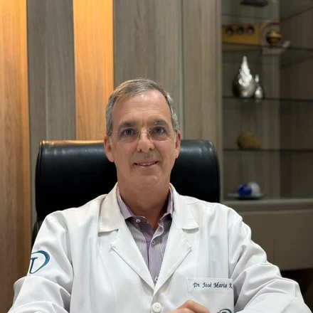
Dr. José Maria
Ombro, cotovelo, mão, microcirurgia e artroscopia
Formado pela UFU em 1991. Doutor em Ortopedia pela FMRP-USP. Membro titular da SBOT.
CRM-MG 26.005 · RQE 23.846
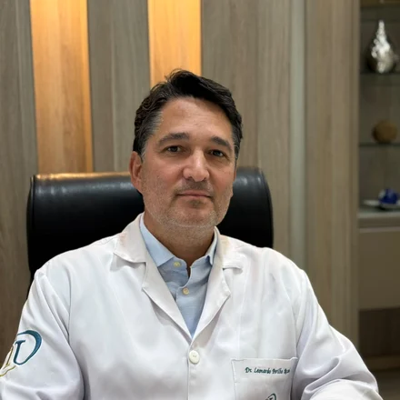
Dr. Leonardo Portilho
Trauma, cirurgia do joelho e artroscopia
Formado pela UFU em 2003. Especialista em Ortopedia e Traumatologia pela UFU. Membro titular da SBOT.
CRM-MG 40.255 · RQE 49.143
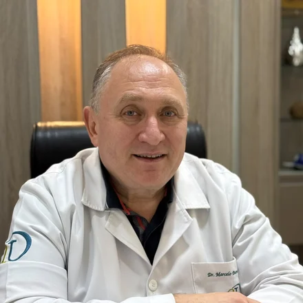
Dr. Marcelo Bueno
Trauma e tumores musculoesqueléticos
Formado pela UFU em 1998. Membro da SBOT, da SBTO e da AOLAT / AOTrauma.
CRM-MG 32.868 · RQE 11.736
Dr. Sandro Cabral
Trauma e patologias do quadril
Formado pela UFU. Especialista em Quadril pela Santa Casa de São Paulo. Responsável técnico do instituto.
CRM-MG 30.586 · RQE 31.828
Mostrando todo o corpo clínico.
Quem somos
O Instituto nasceu da iniciativa de um grupo de médicos ortopedistas que compartilhava
o propósito de atuar de forma integrada e colaborativa, reunindo diferentes
subespecialidades para oferecer um atendimento mais completo, humanizado e direcionado
às necessidades de cada paciente.
Nossa equipe realiza consultas, exames e procedimentos para pacientes de todas as idades,
unindo sólido conhecimento científico, aprimoramento contínuo e recursos tecnológicos.
Nossa missão é promover, com excelência e ética, a recuperação da saúde e da qualidade de
vida, o pioneirismo tecnológico e a responsabilidade social e ambiental.
Buscamos consolidar o IIOT como um centro de referência em Ortopedia e Traumatologia no
Triângulo Mineiro, Sul de Goiás e Alto Paranaíba.
Seis consultórios planejados e sala de procedimentos.
Recepção ampla, com privacidade e conforto em todas as etapas.
Consultas, exames e procedimentos para pacientes de todas as idades.
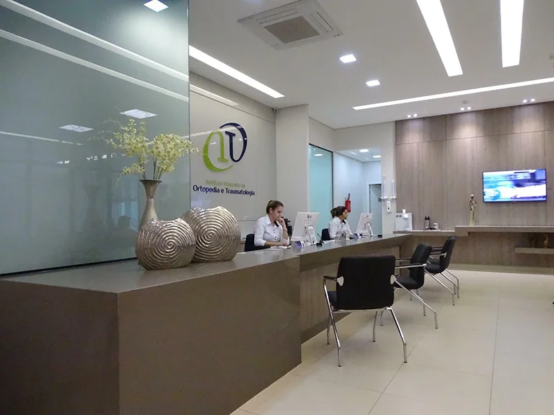
Alguns dos convênios que atendemos
Se o seu plano não estiver na lista, fale com a recepção: a cobertura varia por médico.
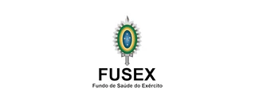
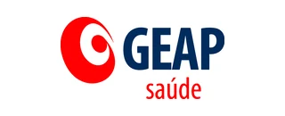
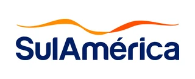
Como chegar ao IIOT
O instituto fica dentro do Complexo UMC, em Uberlândia. Siga o mapa interno para
encontrar a clínica a partir da entrada principal.
EndereçoComplexo UMC — Rua Rafael Marino Neto, 600, Térreo, Sala 43
Jardim Karaíba, Uberlândia (MG)